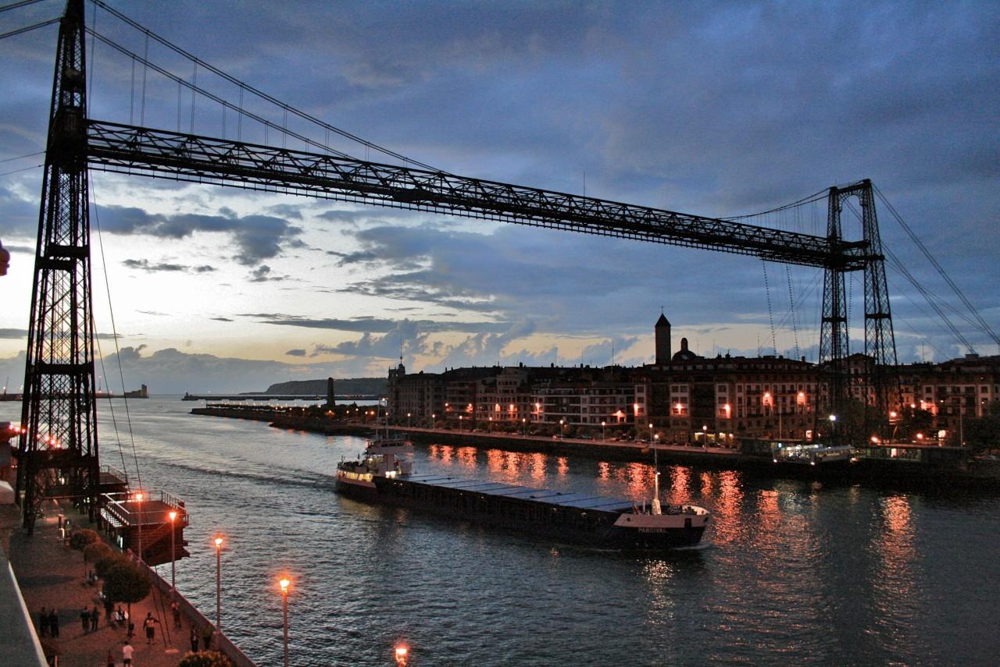

Puente de Vizcaya:
El puente de Vizcaya (Bizkaiko Zubia en euskera), también conocido como Puente Bizkaia, Puente Colgante, Puente Colgante de Portugalete, o Puente Colgante de Las Arenas o puente Palacio, es un puente transbordador de peaje, concebido, diseñado y construido por iniciativa privada entre 1887 y 1893, que une las dos márgenes de la ría de Bilbao en Vizcaya (España). Fue inaugurado el 28 de julio de 1893, siendo el primero de su tipología en el mundo y uno de ocho que aún se conservan.​
El puente recibe varios nombres. El nombre que consta en su página web oficial es "Puente Bizkaia", aunque su denominación más popular y extendida sea la de "puente Colgante" al que a veces se suelen añadir las extensiones "de Portugalete", "de Las Arenas" o incluso "de Bilbao". También suele recibir los nombres de "puente de Portugalete", ya que esta es una de las localidades que une, y "puente Palacio", en honor de su arquitecto, Alberto de Palacio y Elissague.
El puente enlaza la villa de Portugalete con el barrio de Las Arenas, que pertenece al municipio de Guecho, así como las dos márgenes de la ría de Bilbao. Su construcción se debió a la necesidad de unir los balnearios existentes en ambas márgenes de la ría, destinados a la burguesía industrial y a los turistas de finales del siglo XIX.
Historia:
Tanto en el proceso de diseño del puente, como en su construcción intervino el ingeniero y empresario francés Ferdinand Arnodin, experto tanto en la fabricación de cables como en la construcción y reparación de puentes colgantes. Arnodin es autor del puente transbordador de Rochefort, en Francia, cuyo perfil es muy semejante, en efecto, al de Vizcaya. La construcción del puente, que se realizó entre 1890 y 1893, no estuvo exenta de problemas y disensiones entre Palacio y Arnodin, lo que provocó la continua intervención mediadora del reputado ingeniero francés A. Brüll, que había sido presidente de la Sociedad de Ingenieros Civiles de Francia.
El puente tiene 61 metros de altura y 160 metros de longitud. Se trata de un puente colgante con una barquilla transbordadora para el transporte de vehículos y pasajeros. Fue el primer puente de este tipo construido en el mundo y por ello sirvió de modelo de numerosos puentes construidos en Europa, África y América. El puente de Vizcaya es considerado actualmente el puente transbordador en servicio más antiguo del mundo.
A mediados de 1937, durante la Guerra Civil, los ingenieros del republicano Ejército del Norte recibieron la orden de destruir todos los pasos sobre la ría de Bilbao, con el fin de detener el avance de las tropas franquistas. Por esto, el 17 de junio de ese año, se derribó el travesaño que se precipitó sobre las aguas. El puente fue reconstruido y finalmente puesto en servicio nuevamente, el 19 de junio de 1941.​ El proyecto de reconstrucción se debe al ingeniero de caminos José Juan Aracil, quien actualizó el diseño de la viga original y de los cables de suspensión y atirantamiento. Empezando a montar la pasarela central desde el medio hacia ambas orilllas de Portugalete y las Arenas mediante unos cables que sirvieron de apoyo para mantener la pasarela central.
Las 5 barquillas que han colgado del puente desde sus inicios evolucionaron tanto en los materiales de construcción utilizados como en el aumento de las medidas de seguridad para sus ocupantes.
El puente es gestionado por la sociedad El Transbordador de Bizkaia, S.L.. El transbordador del puente realiza viajes durante las 24 horas del día y los 365 días del año. Realizar el trayecto en el transbordador del puente ahorra un trayecto por carretera de casi 20 km, por lo que sigue siendo un medio de transporte ampliamente utilizado para unir Guecho con Portugalete.
La sociedad concesionaria realizó en 1999 importantes obras en el puente, incluyendo la instalación de ascensores en las torres de ambas márgenes y la habilitación de una pasarela en la viga superior, con objeto de introducir un uso turístico. Se construyó Además una nueva barquilla y nuevos edificios de acceso, modificándose el carro de desplazamiento.
Por el Gobierno Vasco, mediante Decreto 265/1984, de 17 de julio (BOPV n.º 132, de 4 de agosto), fue declarado "Monumento Histórico Artístico el Puente «Vizcaya»". Posteriormente, mediante decreto 108/2003, de 20 de mayo (BOPV n.º 111, de 6 de julio) , "se adapta a las prescripciones de la Ley 7/1990, del Patrimonio Cultural Vasco, el expediente de Bien Cultural Calificado, con la categoría de Monumento", a favor del Puente.10​
El 13 de julio de 2006 fue declarado Patrimonio de la Humanidad de la Unesco, siendo elegido entre un total de 37 candidaturas. La Unesco considera al Puente de Vizcaya como una de las más destacadas obras de arquitectura del hierro de la Revolución industrial y destacó su uso innovador de los cables de acero ligero trenzado.
Los premios y distinciones con las que ha sido distinguido son los siguientes: Diploma a la Calidad Turística en destino (Euskalit 2011), Aixegetxo sariak (Arquitectura y Espacio Público 2011), Certificación de Competitividad Turística del Gobierno Vasco (2015, 2016).
La estructura metálica del puente ha estado desde el principio cubierta por pintura negra (o, en algunas temporadas, gris humo), pero este color hace que la estructura absorba más radiación térmica, lo que causa dilataciones más bruscas que deterioran algunas piezas.13​14​15​En 2010 se aprobó un proyecto de restauración que incluía un cambio de color.14​ Se propusieron tres tonos, similares a los de tres minerales de hierro de los cercanos Montes de Triano: el campanil de Gallarta, la blenda Triano y la vena roja hematites de Somorrostro. Finalmente fue elegido el color rojizo de la vena de Somorrostro (código RAL 3005; RGB 94-33-45).16​17​El 24 de abril de 2013, la Comisión de Peticiones del Parlamento Europeo pidió a las autoridades locales y regionales que garantizasen la seguridad en el Puente de Vizcaya. La decisión se formulaba tras la comparecencia en Bruselas de los padres de Mikel Uriarte, un joven fallecido en accidente cuando atravesaba con su coche el transbordador en 2010.
En diciembre de 2018 coincidiendo con el año la celebración de sus 125 años se estrenó en Portugalete la Pastoral Zubia, donde el mismo puente cuenta la historia de la villa.
Precios:
| PERSONAL | SERVICIO | ||||
|---|---|---|---|---|---|
| ORDIN: 05:00h a 22:00h | PROL: 22:00h a 00:00h | ESPEC: 00:00h a 05:00h | |||
| Una persona mayor de 3 años a pie o en vehículo (billete ocasional) | 0.45$ | 0.70$ | 1.60$ | ||
| VEHICULOS | SERVICIO | ||||
|---|---|---|---|---|---|
| ORDIN: 05:00h a 22:00h | PROL: 22:00h a 00:00h | ESPEC: 00:00h a 05:00h | |||
| Un automóvil vacío y sin conductor | 1.60$ | 2.00$ | 3.20$ | ||
| Un todoterreno o similar, furgoneta o camión sin conductor y cuyo peso total no exceda de 6.000 Kg. | 2.60$ | 3.00$ | 3.50$ | ||
| Vehículos especiales, camiones y de servicio hasta 9.000kg, con paso exclusivo y estibados adecuadamente. | 7.00$ | 9.00$ | 14.00$ | ||
| BICICLETAS Y MOTOCICLETAS | SERVICIO | ||||
|---|---|---|---|---|---|
| ORDIN: 05:00h a 22:00h | PROL: 22:00h a 00:00h | ESPEC: 00:00h a 05:00h | |||
| Una bicicleta con su conductor | 0.75$ | 0.90$ | 1.80$ | ||
| Bicicleta con motor, con o sin pedales; motocicletas y sidecars sin conductor. | 0.80$ | 1.00$ | 1.20$ | ||